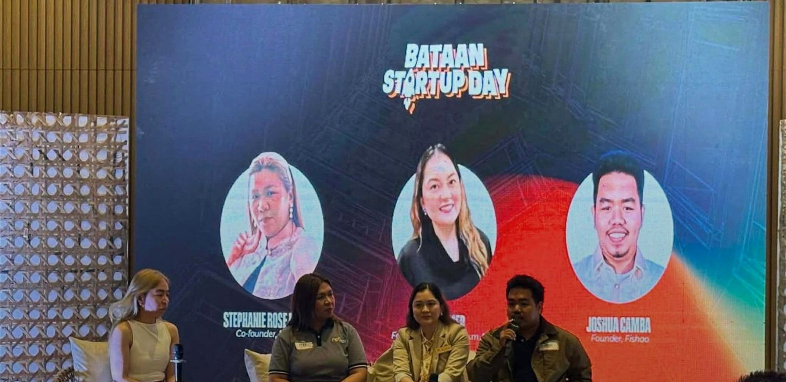
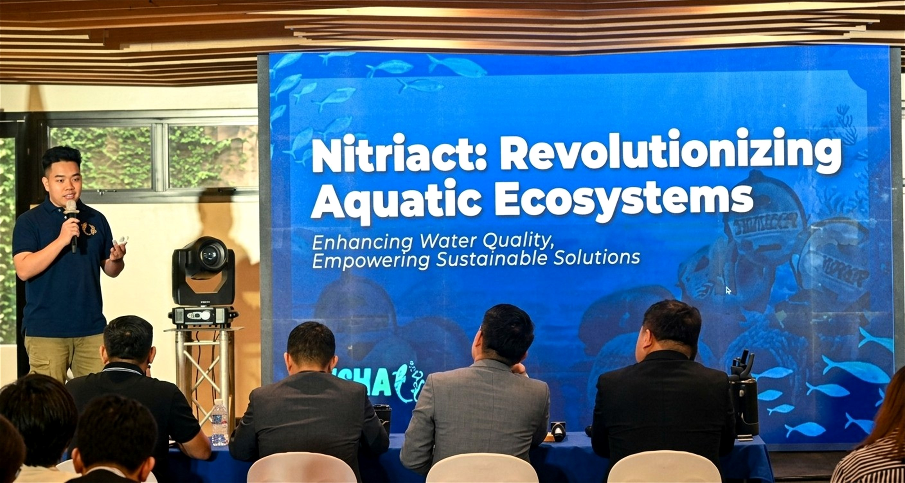

Sustainable fisheries startup · Orani, Bataan
Turning low-value fisheries commodities into solutions.
FISHAO Fish Trading is a sustainable fisheries startup from Orani, Bataan. So far, we have converted more than 500,000 kg of wasted oyster shells into sustainable water conditioner for aquariums.
What we do
From wasted shells to sustainable solutions
We take fisheries commodities that are treated as low value and turn them into products that help aquarium keepers and the fisheries around them.
Low-value commodity
Wasted oyster shells from fisheries that would otherwise go unused.
Converted by FISHAO
Over 500,000 kg converted so far, turning waste into something useful.
Sustainable water conditioner
A water conditioner for aquariums, made from recovered oyster shells.
Ornamental fish
Healthy, carefully handled fish for home aquariums and hobbyists.
Aquarium supplies
The everyday supplies fish keepers need to look after their tanks.
Sustainable by design
Built by a licensed fisheries professional, with fisheries sustainability at the core.
Founder
Joshua Camba
FISHAO was founded by Joshua Camba, who grew up in a fishing community on Manila Bay. The idea became a business in November 2024, when he won the Bataan startup pitching competition.
The name FISHAO stands for Fisheries Integrated Supplies for Hatchery Aquatic Ornamentals.
Our journey
- NOVEMBER 2024Won the Bataan startup pitching competition and started FISHAO.
- 2025Joined the founders panel at Bataan Startup Day to share the journey with aspiring entrepreneurs.
- TODAYOver 500,000 kg of wasted oyster shells converted into sustainable water conditioner, and growing from Orani, Bataan.
Photos
FISHAO on stage
Sharing the FISHAO story with the Bataan startup community.



Let's build sustainable fisheries together
Questions about FISHAO, our water conditioner, or want to work with us? Reach out through the founder's website.
Meet the founder